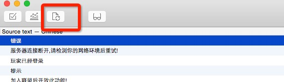

TexturePacker及其命令行工具QUICK_V3_ROOT bash和Xcodepoedit_osx.zip 和 poxls-1.1.0.tar.gzDEBUG_GIT_AUTO_UPDATE和RELEASE_GIT_AUTO_UPDATE输入框使用项目自定义的字体(放弃修改)buildGame.sh 执行lua和资源的导出 参数:1.平台 2.是否加密lua 3.是否加密资源(执行选择相应参数即可)
buildLuaConfig.sh 把excel配置表导出为lua文件
buildRes.sh 导出项目的资源 参数:1.平台 2.是否加密
buildScripts.sh 导出项目的lua文件 参数:1.平台 2.是否加密
buildUpdate.sh 发布自动更新脚本,执行选择相应参数即可
build_format_map.py
cleanGame.sh 清除生成项目的中间文件和update目录
cleanMacPlayer.sh 清除保存在player中的userdefault中的信息,不会重置openudid
cleanTempFile.sh 清除生成项目的中间文件,但是不会清除update目录
exportPO2Xlsx.sh 将项目的本地化po文件导出为excel文件 参数:1.将要导出的excel文件的路径(xlsx后缀名)
exportXlsx2po.sh 将脚本10导出的excel导回项目中 参数:1.将要导入的excel文件路径(xlsx后缀名)
export_plist_texture_data.sh 将合成的大图信息导出到项目中(执行选择相应参数即可)
functions.sh 为其他脚本提供基础函数的脚本，如果要改变加密资源和lua的XXTEA信息就修改这个文件中的值
install.sh 为所有的脚本添加执行权限
plist_texture_data_to_lua.py 脚本12的python实现
syncUpdateDataToGit.sh
将生成的update目录上传到相应的git仓库,这个脚本不会自动部署服务器，需要手动ssh到服务器pull版本号使用这个脚本前必须确认
包含两个全局shell变量:
1.DEBUG_GIT_AUTO_UPDATE
测试用的git仓库路径 git@github.com:ModunZhang/kod_test_update.git
2.RELEASE_GIT_AUTO_UPDATE
正式的git仓库路径 git@github.com:ModunZhang/kod_auto_update.git
安装poxls-1.1.0.tar.gz和poedit_osx.zip
用poedit更新所有po文件的本地化信息
执行脚本10将po文件导出为excel
excel修改完成后执行脚本11将excel导出为最新的po文件
用poedit设置所有po文件(每个po文件都需要设置)的属性(代码编码为utf8,搜索路径为app目录,搜索关键词为下划线，poedit的首选项只需设置一次 http://zengrong.net/post/1986.htm
更新本地化文件
如果第6步执行不了，原因就是第5步没有设置好!



_CanCompress:将被直接压缩为pvrtc4的散图
_Compressed:iOS已经被合成最终大图的图
_Compressed_mac:Player已经被合成最终大图的图
rgba444_single:将被压缩为rgba4444格式的散图
PackImages文件夹下,TextPacker的项目文件也在里面ImageOptim.app执行一次无损压缩再放入项目中buildScripts.sh iOS falsebuildRes.sh iOS falsebuildGame.sh iOS false falseXcode中必须设置Qucik的环境变量 QUICK_V3_ROOT
config.lua文件不能被更新(cpp写死的)
大版本号由Xcode中设置的大版本号生成json文件
自动更新生成的脚本和资源加密参数必须为true
执行自动更新发布的所有步骤，注意Xcode大版本号必须比线上高，完成自动更新发布的所有步骤后Xcode打包即可。
每次发布新包，大版本号必须比线上的高
举例:手机上此时装的1.0(ABC)
我们发布新包1.0(DEF),并部署1.0(DEF)到更新服务器。把1.0(DEF)的包覆盖安装到手机上，启动游戏仍然版本会是1.0(ABC),手机依然会走自动更新流程。
我们发布新包1.1(DEF),并部署到更新服务器,如果覆盖安装到手机上,启动游戏版本会是1.1(DEF)不会走自动更新。如果我们不覆盖安装，直接启动1.0(ABC),会走强制更新流程。
发布自动更新的时候一定检查git仓库版本号,不要轻易部署
June 10, 2015